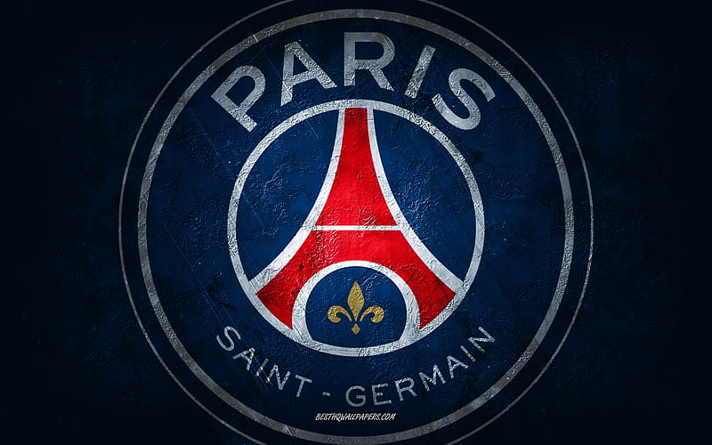
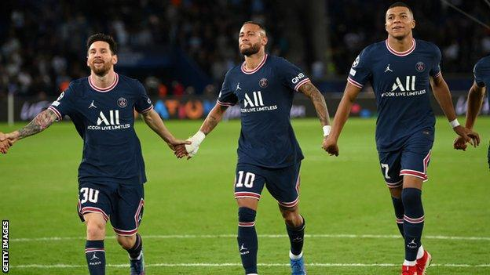

My favorite team is kinda common known but The reason i like them is not becuase they are only good its becuase there atleast three of my favorite players in the same team. My favorite team is named Psg (paris saint German F.C.).
Psg was founded in august 1970 after the merger of paris football club and stade saint-german. They actually started off as a pretty bad soccer team. That being the case the team did not make a lot of wins in there time. That soon changed after a young player names mpappe joined the team. After that, a player named neymar joined the team aswell and soon after the best player in the world Messi has finally joined it.
